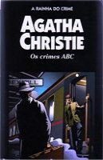

Os Crimes ABC
The ABC Murders
Um misterioso e metódico assassino comete seus crimes de acordo com três normas: escolhe suas vítimas e as cidades onde moram seguindo rigorosamente uma ordem alfabética; deixa junto aos cadáveres um guia de trens, chamado ABC na Grã-Bretanha e anuncia cada um dos assassínios através de uma carta dirigida a Hercule Poirot, indicando o lugar e o dia em que cometerá o crime. Tudo leva a supor que se trata de um estranho e aterrorizador psicopata, tão louco quanto inteligente e frio, que os jornais comparam a Jack, o Estripador. Porém o cruel criminoso não sabia que, ao enviar cartas a Poirot, brincava com fogo, desafiando um inimigo que o superava em inteligência. E Poirot imagina se a maneira de agir do assassino não constitui uma perigosa cortina de fumaça para ocultar alguém mais perverso do que um sanguinário doente mental. Poirot lança a pergunta e, como sempre, termina encontrando a surpreendente resposta.
Gabriela Pires: O pequenino gênio Hercule Poirot desvenda uma série de assassinatos muito intrigantes. São assassinadas pessoas cujos nome e cidade onde moram estão de acordo com a ordem alfabética e, junto de seus corpos é sempre encontrado o guia de trens ABC. O mais estranho, porém essencial para a solução dos crimes por Poirot, é que o misterioso assassino sempre avisa ao detetive quando irá matar suas vítimas indefesas. A polícia acha que Sir Alexander Bonaparte Cust é o assassino, mas Hercule soluciona esses crimes com um desfecho absolutamente incrível. Não percam, esse livro é ótimo!